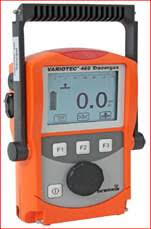
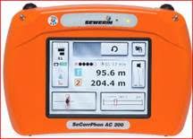
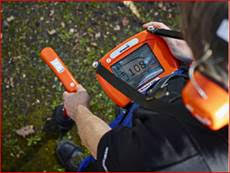
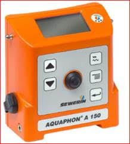

📞 +507 6675-8529
✉ contacto@zernikeal.com
Soluciones profesionales para la detección temprana de fugas y control de gases.

Equipo profesional para la detección de fugas en redes de agua y sistemas presurizados mediante gas trazador.
Ver producto
Equipo combinado Geófono y Correlador para la detección de fugas de agua por el método electro acústico.
Ver producto
Geófono profesional diseñado para la detección precisa de fugas de agua en redes de distribución presurizadas mediante el método electroacústico.
Ver producto
Geófono profesional diseñado para la detección electroacústica de fugas de agua en redes presurizadas.
Ver producto